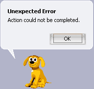
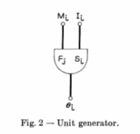
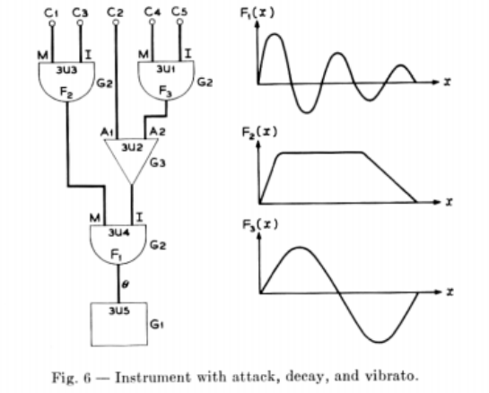
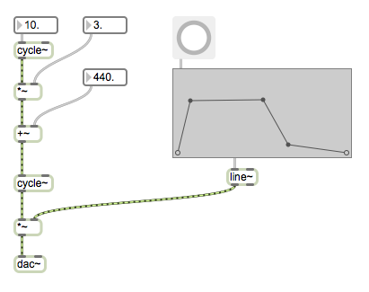

Computation is an inherently temporal medium: it comprises information processes that can be described abstractly (through data and code) but these unfold in actuality over time, step by step at the lowest levels. Similarly, time is integral to our perception of, and interaction with the world. If time is so important, how can we represent and reason with it? How can we experience and create with it? Are there parallels in the treatment of time between art and computing? Are there differences we can learn from?
"Music is a secret calculation done by the soul unwaware that it is counting", W. Leibniz.
"[Time] is like holding a snowflake in your hands: gradually, as you study it, it melts between your fingers and vanishes" --Carlo Rovelli, The Order of time
We don't really know how time works. Physics tells us that time is not continuous, directed, nor singular and uniform -- the past is not fixed, the present does not exist. These seem highly incongruous with our perception of time, or our reasoning about it, or our expressions of it in time-based arts.
To be countable, we measure against a known repeating period (cycle)
We can also measure relative rates of non-cyclic times, such as:
A spatial metaphor of time forms a line from past to future. The line could be ordinal (a sequence or list, such as the script for a play) or metric, in which ecah event has a numeric position and/or each duration has a measurable length, with respect to some measure or clock. This clock is not necessarily 'real time'.
Finite linear time has a definite beginning (zero time) and end; infinite linear time has no definite beginning or end. For example, a pre-recorded DVD encodes finite linear time, while the real-time video stream from a CCTV camera has no definite end.
Cyclic or circular time represents a period that repeats; such as a clock. Within this period, time seems finite. The inverse of the period is the frequency (rate of repetition), with respect to another period/rate. Linear and cyclic time can be combined by representation as a spiral, such as a calendar. Linearizing time suggests the ability to navigate around it: rewind, fast-forward, skipping, scrubbing, scratching.
A continuous representation of time can be subdivided without limit. No matter how short the duration, smaller durations can be described within it. This is the representation of time used in understanding analog systems, and the calculus of differential equations (such as function derivatives and integrals). For example, the function sin(t) is continuous (where t represents a real-valued variable such as time). This is called an implicit function: the value at any position is not given, but can be computed.
A discrete representation of time has a lowest temporal resolution below which shorter durations cannot be represented. It describes an ordinal time series, a sequence of discrete values. Discrete series are sometimes indicated using square brackets, such as f[n] (where f is an arbitrary function and n is the discrete integer series). It requires a different branch of mathematics: the calculus of difference equations and finite differences.
We do not know if nature is at root temporally continuous or discrete (it has been debated since at least the time of the early Greek philosophers), however we do know that if time is discrete, it is so on a scale so vastly smaller than what we can perceive, that for practical purposes it may be considered continuous.
Considering time as a line "spatializes" it, giving a perspective from outside it; this can be very helpful (scripts, scores, etc.) but is not always appropriate, and may lead to the habit of thinking of it as static.
A complemenatary view to time as a line is the view of time as a set of nested durations of presence, of which the shortest possible duration is the infinitessmial point of the passing present. Longer durations represent the degrees to which the past endures into the future, as a nested set of widening 'windows' of unity. If I act upon a memory, I effectively persist that memory into a newly made future; in effect, the past of that memory is co-present.
Perhaps a simpler distinction we can make separates that which changes from that which does not. Time-based arts (music, film, etc.) can be broken down into "vertical" and "horizontal" structures. Similarly computations can be broken down into the unchanging "static" and variable "dynamic" components. These can be relative divisions; a 'scene' in a film is a relative constant with respect to the frame, but ephemeral (dynamic) with respect to an act. Similarly, a variable may endure for the shortest for loop iteration, or may persist over the entire program's lifetime.
Vertical: The vertical structure provides unity: that which remains relatively constant throughout, and thus encompasses the qualities of the whole. Since it influences all parts, vertical structure is often largely outlined in early stages of a work.
Horizontal structure refers to the temporal form of change: difference, movement, events, repetitions, expectations, surprises, resolutions.
Eisenstein believed that “art is always conflict”, the opposition of forces that motivates and shapes action. The opposed forces are dissonance/consonance or tension/release; expectations and their satisfactions or frustrations. But in art the distinctions between horizontal and vertical, and between constrast and affinity, need not be hard and fast. Principles of unity in a work may be guidelines fit to be broken when needed, or a work may pass through phases of different unities or even thread multiple unities into a larger dynamic whole.
Programming also involves a division of static and dynamic components, usually more explicitly.
The rules of a programming language are usually static: they are not expected to change during the run-time of the program. On the other hand, the flow of control is partly determined as a program runs, and values in memory can change ("variables") or be allocated and freed as it goes; these are examples of dynamic components. Computing inherits from mathematical logic a rigorous attitude toward definitions, thus static and dynamic divisions tend to be more sharply discriminated and pedantically adhered to. However there are times where exceptions are desirable or necessary.

We saw in our first lecture how computing inherited an industrial lineage a linear, task-oriented character: a program having a well-defined job to do defined in advance (as in the analogy of a recipe). From mathematics and cryptography computing inherited the notion that a program's job is to compute an answer. One of the first principles in the theory of computation regards whether a program will or will not terminate with an answer; irrespective of how long that might actually take.

As mainframe computing became established in the 1950's, this evolved into "batch" oriented computing, in which control programs sequentially dispatch to other task oriented "job" programs, for reliability and efficiency. Dumb terminals (in modern terminology, "thin clients") are used to input data for new jobs and monitor output. Gradually this evolved into the UNIX terminal (still present in MacOSX and Linux operating systems), which allows jobs to be created in which the output of one is 'piped' to the input of another.

Although most programs that we consciously interact with today are not linear, task-oriented procedures invoked to compute an answer, they are still built upon these foundations (see the request/response nature of web technologies for example). Time has been absent from many programming languages and interfaces, implicit rather than explicit. That is, we may need to buid our own. For example, Javascript offers only a small number of components for temporality, upon which we will build something more expressive:
// returns the number of milliseconds since a program began
performance.now()
// call function `fun` after `period` milliseconds
setTimeout(fun, period)
// call function `fun` after `period` milliseconds, repeatedly
setInterval(fun, period)
// in the browser: call `fun` when the screen is next ready to render (typically about 60 times per second)
requestAnimationFrame(fun)Consider how these could be combined with the various kinds of control flow we encountered in the first lecture:

Unfortunately, for multimedia, the practical constraints of real-time are unavoidable; this is especially sensitive for audio signal processing. To be timely, an operation must produce results in less time than the playback of the results requires. Any failure to do so results in a break in the output. Time waits for no machine.
The amount of time it takes for an input event to pass through the computing system and cause experienceable output is the latency. Interactive software requires low latency (small fractions of a second) to feel natural. VR and musical applications can require especially low latencies of 10ms or less.
In the conventional view, software development occurs before and after a program runs, that is, outside of run-time. But with server programming, in-app scripting, shell scripting, in-game development, live coding etc. this assumption breaks down. The computer music community has been especially active in elevating time to a first-class citizen in programming.
Further discussion here:
We have lived in a visually-dominated culture over the last century; it is therefore worthwhile looking at non-visual trajectories for alternate perspectives. For example, how the articulation of sound, particularly music, illuminates the capacities and problematics of time.
Technology has been integral to music history, from luthiers (instrument builders) to composers (techniques) to archives (notational systems) to auditoria (acoustic architecture) to automation (piano rolls) etc. Sound in digital computational media inherited two principal pre-histories, both of which emerged in large part from a musical tradition that was expanding its scope from limited scale systems through serialism and futurism to encompass "any sound whatsoever":
Both these threads remain central to computer music today in the form of samplers and DAWs, modular synthesizers and plugins.
Composers of the time also began to see all musical parameters as articulations of time at different scales, from macro-structures of an entire composition down to the microstructures of an individual sound event's timbre.
With the advent of computers it became possible to store and replay sound as a discrete sequence of digitally-encoded numbers that reconstruct the undulations of the pressure waves of sound. This promised a kind of unification of the electronic and electroacoustic spaces, since stored data can be both manipulated extensively (electroacoustic) and generated algorithmically (electronic). That is, the ability to represent sound as data allowed the complete exploration of "any sound whatsoever" to numeric, algorithmic analysis. Composers such as Iannis Xenakis and Herbert Brun attempted to build algorithms that would specify works from individual samples up, disovering entire new realms of noise.
Sound recording/playback technology requires a mechanism to transform the ephemeral undulations of sound pressure (what we can hear) into a persistent recording medium, such as hardened wax, and another mechanism to the transcribe this record back into waves of sound pressure. In the phonograph (below), introduced in 1877, vibrations cause patterns to be etched into a rotating cylinder.

The modern record player adds an electronic amplifier to drive the movements of a loudspeaker cone, but otherwise follows the same princple. Here are vinyl record grooves under an electron microscope:

These grooves are smooth and continuous, since records are an analog representation of sound, which is theoretically ideal. Unfortunately it is susceptible to noise and gradual degradation. The digital representation of sound on the other hand is completely discrete:

At the simplest level, sounds are represented digitally as a discrete sequence of (binary encoded) numbers, representing a time series of quantized amplitude values that relate to the variations of compression an expansion in the air pressure waves we hear as sound.
This is bound by the sampling theorem and other aspects of information theory, just like any other digital representation. Although we can represent continuous functions in the computer (e.g. by name, as in Math.sin), we cannot accurately represent continuous signals they produce, as they would require infinite memory. Instead we sample a function, such as a sound being recorded, so rapidly that we produce a series of values that seem perceptually continuous. Digitized audio a discrete-time, discrete-level signal of an electrical signal. Samples are quantized to a specific bit depth and encoded in series at a specific rate, called the sampling rate.

How fast is fast enough? If the function changes continuously but only very slowly, only a few samples per second are enough to reconstruct a function's curve. You do not need to look at the sun every millisecond to see how it moves; checking once per minute would be more than enough. But if we didn't check fast enough, we might miss important information. If we checked it once every 24 hours, it would appear to be stationary. If we checked the sun's position once every 23 hours we would only see a complete cycle every 24 days, and it would make the sun appear to be slowly moving backwards! This phenomenon is called aliasing. The Nyquist-Shannon sampling theorem states that the highest frequency that can be accurately represented is one half of the sampling frequency (the Nyquist frequency). Anything above this frequency will alias and appear to be a lower frequency. That is, we would have to check the sun at every 12 hours or less to accurately know the rate: enough to capture both night and day (or sunrise and sunset).

An event that occurs repeatedly, like the sun rising and setting, can be described in terms of its repetition period, or cyclic frequency (the one is the inverse of the other).
period = 1 / frequency
frequency = 1 / periodIn units:
seconds = 1 / Hertz
Hertz = 1 / seconds
Image taken from Roads, Curtis. Microsound. MIT press, 2004.
The fact that the whole gamut of musical phenomena, from an entire composition of movements, to meter and rhythm, to pitch and finally sound color can be described by a single continuum of time has been noted by composers such as Charles Ives, Henry Cowell, Iannis Xenakis and Karlheinz Stockhausen.
Many of the early electronic and computer music composers, including Xenakis and Stockhausen, were attracted to the medium for the apparently unlimited range of possible timbres it could produce. Rather than being limited to the sounds we can coerce physical objects to emanate, we have the entire spectrum available, every possible variation of placing sample values in a sequence, without limitation. In addition to the potential to find the new sound, the computer was also attractive to composers as a precise, accurate and moreover obedient performer. Never before could a composer realize such control over every tiny detail of a composition: the computer will perfectly reproduce the commands issued to it. (Of course, both of these trends mirror the industrial era from which they were borne.)
Unfortunately, although the space of possible sounds in just one second of CD-quality audio is practically infinite, the vast majority of them are uninteresting, and quite likely unpleasant.
This is perhaps emblematic of a more general problem: with so much data, and so much ability to generate & transform it, how to make sense out of it? How to retain that promise of infinity without becoming lost in noise, or resting too much upon what is already known?
For example, selecting samples randomly results in psychologically indistinguishable white noise. But specifying each sample manually would be beyond tedious. So, with all the infinite possibilities of sounds available, the question is how should one navigate and determine the space of all possible sample sequences to find things that are interesting?
This is could be a great prompt for making: to design a function to map from discrete time to an interesting sequence of data as sound. Without borrowing or leaning too much on things you already know, how would you approach this problem; how would you break it down? For example, what are the salient general features that we perceive in sound, how can they be generated algorithmically, with what kinds of meaningful control?
We must also be careful to not let the regular space of digital sound (or indeed pixel space in images) mislead us. The ear is not equally sensitive across frequencies and amplitudes, and there are perceptual effects such as fusion and masking, phantom fundamentals etc. to take into account.

One of the most influential solutions to this problem was developed by Max Mathews at Bell Labs in the late 1950's, in his Music-N series of computer music languages. The influence of his work lives on today both in name (Max in Max/MSP refers to Max Mathews) and in design (the CSound language in particular directly inherits the Music-N design).
Mathews' approach exemplifies the "divide and conquer" principle, with inspiration from the Western music tradition, but also a deep concern (that continued throughout his life) with the psychology of listening: what sounds we respond to, and why. In his schema, a computer music composition is composed of:
Matthews was aware that we perceive time in combinations both discrete events and continuous streams; abstracted into his "note" and "instrument" components respectively. The "score" is able to reflect the fact that we perceive multiple streams simultaneously.
Is anything missing from this model? If so, how would you represent it?
He noted that streams are mostly formed from largely periodic signals, whose most important properties are period (frequency), duration, amplitude (loudness), and wave shape (timbre), with certain exceptions (such as noise). Furthermore he noted that we are sensitive to modulations of these parameters: vibrato (periodic variation in frequency), tremelo (periodic variation in amplitude), attack and decay characteristics (overall envelope of amplitude). To provide these basic characteristics, without overly constraining the artist, he conceived the highly influential unit generator concept. Each unit generator type produces a stream of samples according to a simple underlying algorithm and input parameters.

For example, a pure tone can be produced by taking the sin of a steadily increasing sequence of values (a clock or accumulator), producing a sine wave; the parameters may include a multiplier of the clock (for frequency) and a multiplier of the output (for amplitude).
Unit generators (or simply "ugens") can be combined together, by mapping the output of one ugen to an input parameter of another, to create more complex sound generators (e.g. creating tremelo by mapping one sine wave output to the amplitude parameter of another), and ultimately, define the complete instruments of an orchestra. The combination of unit generators is called a directed acyclic graph, since data flows in one direction and feedback loops are not permitted.
Music-III was a compiler, that is, a program that receives code in some form, and produces another program as output. Given orchestra specification data, the Music-III compiler produces programs for each of the instruments.

Some example unit generators include:

Here's what the above instrument looks like (more or less) in Max/MSP.
Modern computer music software such as Max, PD, CSound and SuperCollider have hundreds of different unit generators. Although the syntax is very different (and we no longer need to punch holes in card!), the same principles are clearly visible in modern computer music languages, such as the SynthDef construct in SuperCollider:
(
SynthDef(\example, {
Out.ar(0,
SinOsc.ar(rrand(400, 800), 0, 0.2) * Line.kr(1, 0, 1, doneAction: 2)
)
}).play;
)A separate program, called the sequencer, receives score data, and for each note, the sequencer "plays" the corresponding instrument program, with the note parameters to specify frequency, volume, duration etc. The outputs of each note program are mixed into an output stream, which is finally converted into sound. Score events included:
In summary, Max Matthews' Music-III system comprises/requires:
The benefits of his approach included both flexibility (a vast diversity of instruments, orchestrae, scores can be produced), efficiency (at $100 per minute!), and suitability to producing interesting sounds.
With modern languages we can overcome many of the limitations in the 1950's programming environment, allowing us to create a much richer and friendlier acoustic compiler and sequencer...
Is this the only way to structure a composition? Is it the only/best solution to the great computer music problem? What cannot be expressed in this form? What alternatives could be considered?
How would you implement this today?
Let's take a look at how this works today in Max (a program whose name acknowledges Max Matthews!):
Electronic realm:
Electroacoustic realm:
What about sco-space?
A moment of reflection: remember 'machines & tapes'; that tapes are data are code. To what extent is an audio signal a 'tape of instructions'? E.g. a signal stream of triggers to activate an oscillator. Or something more complex, e.g. MIDI data streams; show MIDI interpreter example. Or something more complex (calculator example). So... what kind of interpreter would you write to articulate structure?
Although low-dimensional, audio programming can be surprisingly demanding. New data must be generated at reliable, steady rates of forty thousand samples per second or better, and latencies must remain low for musical sensitivity. It occupies a fascinating boundary between the apparently continuous (analog) but actually discrete (digital), and brings software architecture and user-experience issues to the fore in the mapping of perceptual/musical concepts to actual implementations.
Let's try to dig down to low levels of what's really going on here, and see if we can build it back up again. Let's say, we wanted to build a general Music-III style program in Node.js, where we can throw a whole range of Javascript flexibility at it.
First, we can look at what's happening underneath gen~, by sending an exportcode message to it, revealing the C++ that it is generating & compiling. The overall structure is of initialization and callback.
Second, we'll look at writing a Node.js module to give us the ability to generate audio in realtime. This still depends on using C++ to access the hardware, so we'll write a native module.

At this point we have abstracted the hardware down to a function to generate the "next sample", possibly as a function of time. Now we don't need to worry about C++ anymore, and it's up to you: how would you articulate a response to the 'computer music problem'?
E.g. for parallel scheduling ideas, consider temporal recursion and priority queues?
Why is the spectrum of a pure impulse similar to that of white noise?
Fourier transform
Not only sines; wavelet decompositions for example can reconstruct from a wide variety of basis waveforms.
Limitations:
Heisenberg Uncertainty Principle: the more accurately you can determine position, the less you can know the conjugate variable of momentum. Similarly for temporal precision vs. frequency precision: a greater frequency resolution (more bins) requires a longer period to produce it, which smears time. The uncertainty principle is inherent in the properties of all wave-like systems, which means, pretty much everything. (Note: not the same as the "observer effect".)